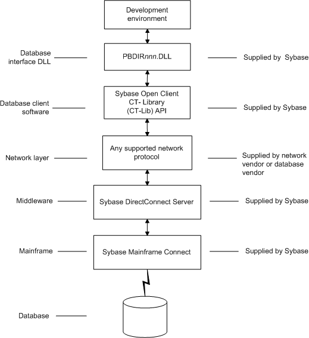
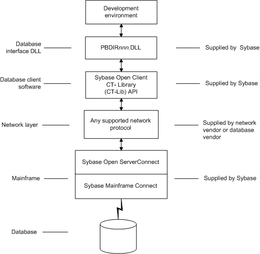

Figure 6-6 shows the basic software components required to access a database using the DirectConnect interface and the Open ServerConnect middleware data access product.

Supported versions for the DirectConnect interface
The DirectConnect interface uses a DLL named PBDIR105.DLL to access a database through either DirectConnect or Open ServerConnect.
 Required DirectConnect versions To access a DB2/MVS database through the access service,
it is strongly recommended that you use DirectConnect for MVS access
service version 11.1.1p4 or later.
Required DirectConnect versions To access a DB2/MVS database through the access service,
it is strongly recommended that you use DirectConnect for MVS access
service version 11.1.1p4 or later.
 Required Open ServerConnect versions To access a DB2/MVS database through Open ServerConnect,
it is strongly recommended that you use Open ServerConnect IMS and
MVS version 4.0 or later.
Required Open ServerConnect versions To access a DB2/MVS database through Open ServerConnect,
it is strongly recommended that you use Open ServerConnect IMS and
MVS version 4.0 or later.
Supported DirectConnect interface datatypes
The DirectConnect interface supports the PowerBuilder datatypes listed in Table 6-5 in DataWindow objects. and embedded SQL.
Preparing to use the database with DirectConnect
Before you define the interface and connect to a database through the DirectConnect interface, follow these steps to prepare the database for use:
- Install and configure the Sybase middleware data access products, network, and client software.
- Install the DirectConnect interface.
- Verify that you can connect to your middleware product and your database outside PowerBuilder.
- Create the extended attribute system tables outside PowerBuilder.
Step 1: Install and configure the Sybase middleware product
You must install and configure the Sybase middleware data access product, network, and client software.
 To install and configure the Sybase middleware
data access product, network, and client software:
To install and configure the Sybase middleware
data access product, network, and client software:
Make sure the appropriate database software is installed and running on its server.
You must obtain the database server software from your database vendor.
For installation instructions, see your database vendor's documentation.
Make sure the appropriate DirectConnect access service software is installed and running on the DirectConnect server specified in your database profile
or
Make sure the appropriate Open ServerConnect software is installed and running on the mainframe specified in your database profile.
Make sure the required network software (such as TCP/IP) is installed and running on your computer and is properly configured so you that can connect to the DirectConnect server or mainframe at your site.
You must install the network communication driver that supports the network protocol and operating system platform you are using.
For installation and configuration instructions, see your network or database administrator.
Install the required Open Client CT-Library (CT-Lib) software on each client computer on which PowerBuilder is installed.
You must obtain the Open Client software from Sybase. Make sure the version of Open Client you install supports both of the following:
- The operating system running on the client computer
- The version of PowerBuilder that you are running
 Required Open Client versions To use the DirectConnect interface, you must install Open
Client.
Required Open Client versions To use the DirectConnect interface, you must install Open
Client.For information about Open Client, see your Open Client documentation.
Make sure the Open Client software is properly configured so you can connect to the middleware data access product at your site.
Installing the Open Client software places the SQL.INI configuration file in the SQL Server directory on your computer. SQL.INI provides information that SQL Server uses to find and connect to the middleware product at your site. You can enter and modify information in SQL.INI with the configuration utility or editor that comes with the Open Client software.
For information about editing the SQL.INI file, see "Editing the SQL.INI file". For more information about setting up SQL.INI or any other required configuration file, see your SQL Server documentation.
If required by your operating system, make sure the directory containing the Open Client software is in your system path.
Make sure only one copy of each of the following files is installed on your client computer:
- DirectConnect interface DLL
- Network communication DLL (such as NLWNSCK.DLL for Windows Sockets-compliant TCP/IP)
- Open Client DLLs (such as LIBCT.DLL and LIBCS.DLL)
Step 2: Install the interface
In the PowerBuilder Setup program, select the Typical install, or select the Custom install and select the Direct Connect Interface (DIR).
Step 3: Verify the connection
Make sure you can connect to your middleware product and your database and log in to the database you want to access from outside PowerBuilder.
Some possible ways to verify the connection are by running the following tools:
- Accessing the database server Tools such as the Open Client/Open Server Configuration utility (or any Ping utility) check whether you can reach the database server from your computer.
- Accessing the database Tools such as ISQL or SQL Advantage (interactive SQL utilities) check whether you can log in to the database and perform database operations. It is a good idea to specify the same connection parameters you plan to use in your PowerBuilder database profile to access the database.
Step 4: Create the extended attribute system tables
PowerBuilder uses a collection of five system tables to store extended attribute information. When using the DirectConnect interface, you must create the extended attribute system tables outside PowerBuilder to control the access rights and location of these tables.
Run the DB2SYSPB.SQL script outside PowerBuilder using the SQL tool of your choice.
For instructions, see "Creating the extended attribute system tables in DB2 databases".
Editing the SQL.INI file
Make sure the SQL.INI file provides an entry about either the access service being used and the DirectConnect server on which it resides or the Open ServerConnect program being used and the mainframe on which it resides.
For the server object name, you need to provide the exact access service name as it is defined in the access service library configuration file on the DirectConnect server. You must also specify the network communication DLL being used, the TCP/IP address or alias used for the DirectConnect server on which the access service resides, and the port on which the DirectConnect server listens for requests:
[access_service_name]
query=network_dll,server_alias,server_port_no
PowerBuilder users must also specify the access service name in the SQLCA.ServerName property of the Transaction object.
Defining the DirectConnect interface
To define a connection through the DirectConnect interface, you must create a database profile by supplying values for at least the basic connection parameters in the Database Profile Setup - DirectConnect dialog box. You can then select this profile anytime to connect to your database in the development environment.
For information on how to define a database profile, see "Using database profiles".